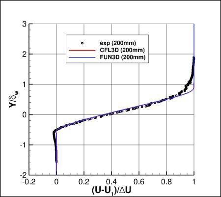
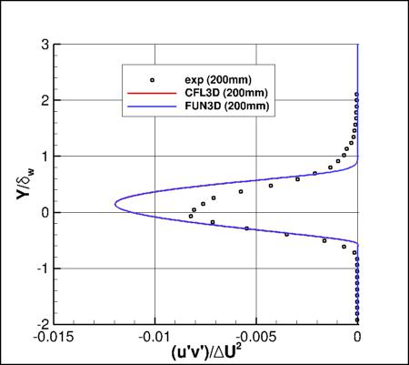
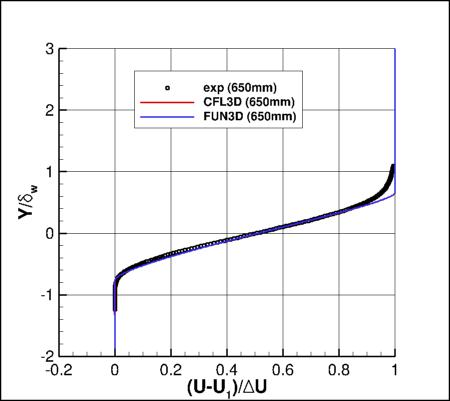
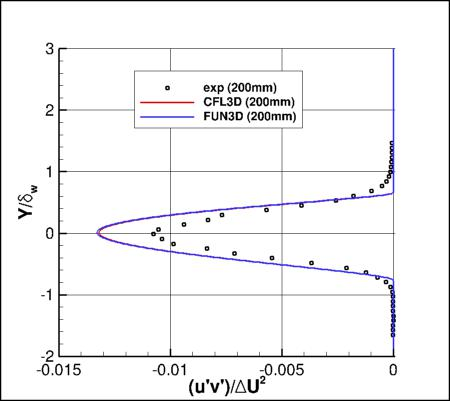
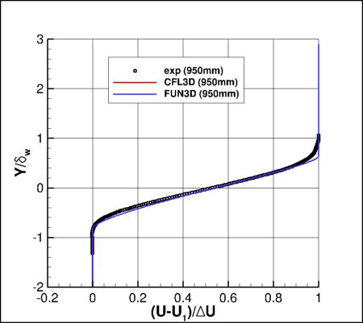
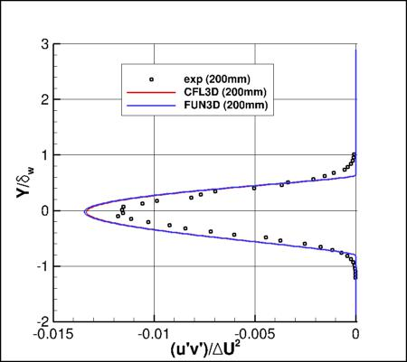

Public Access (formerly Langley Research Center)Turbulence Modeling Resource |
Jump to: SA Results, SSTm Results, SST-Vm Results, SSG/LRR-RSM-w2012 Results, Wilcox2006-klim-m Results, EASMko2003-S Results
Return to: Mixing Layer Validation Intro Page
Return to: Turbulence Modeling Resource Home Page
2D Mixing Layer Validation Case
K-kL-MEAH2015m Model Results
Link to k-kL-MEAH2015m equations






Previously on this page the results were reported as k-kL-MEAH2015 solutions, but more properly they should be referred
to as k-kL-MEAH2015m. Essentially no difference is expected.
Note that thorough
grid studies were not performed for validation cases such as this one.
Some effort was made to ensure reasonable grid resolutions, but there may still be
small noticeable discretization errors. Therefore, these validation results shown should be considered
representative, but not "truth."
K-kL-MEAH2015m results are shown for CFL3D and FUN3D
on the second-finest grid (369x369, 89x161, 121x161).
Both CFL3D and FUN3D used freestream turbulence intensity=0.064% and freestream turbulent viscosity (relative to laminar)=0.009
(additional details can be found in the
CFL3D User's Manual, Appendix H).
Please read note 5 on Notes on running CFD page.
Results are nearly identical between the two codes.
The y value is normalized by the vorticity thickness (from experiment),
the U velocity is normalized by the lower-stream U velocity as well as the change in the
U velocity between lower and upper streams. The specific turbulent shear stress is normalized by
the square of the change in U velocity.
Note that these are compressible code results at "essentially incompressible" conditions of M=0.121108.
There may be a very small influence of compressibility.
The data files from CFL3D are given here:
mixinglayer_cfl3d_u_kkl.dat,
mixinglayer_cfl3d_uv_kkl.dat.
(Note: some of the profiles have been interpolated using Tecplot software onto pre-set points, that may or may
not correspond to the actual grid points or grid cells used in the computation.)
A typical FUN3D input file is:
fun3d.nml_typical_kkl_2.
Jump to: SA Results,
SSTm Results,
SST-Vm Results,
SSG/LRR-RSM-w2012 Results,
Wilcox2006-klim-m Results,
EASMko2003-S Results Return to: Mixing Layer Validation Intro Page Return to: Turbulence Modeling Resource Home Page
Page Curators: Christopher Rumsey,
Ethan Vogel,
Clark Pederson
Last Updated: 02/27/2025